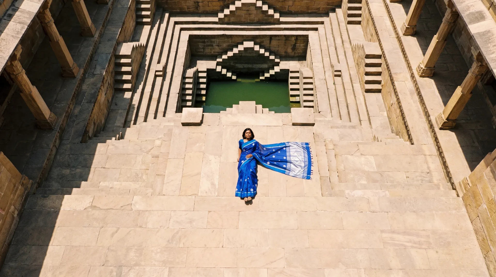
Bhitti Chitra
Painted walls of old Rajasthan, carried into silk and thread.
Scroll
Woven by hand
Every piece leaves a handloom, never a power loom.
Silk Mark certified
Pure silk, tested and tagged before it ships.
Wrapped in cloth
Sent in a reusable cotton bundle, not plastic.
Finished for you
Fall, pico and blouse stitching included.
Every sari begins on a loom in a village where the craft has been handed down for generations. We design with the weaver, not around them, so each piece holds the patience of the hand that made it.
Handwoven in IndiaSeven weeks, one sari
Before anything reaches the store it passes through the dyer's vat, the spinner's wheel and the weaver's loom. These are the hands and rooms where that happens.
- Chanderi at dawn
- The loom at first light
- A weaver's hands
- Zari on the pallu
- Worn, at night
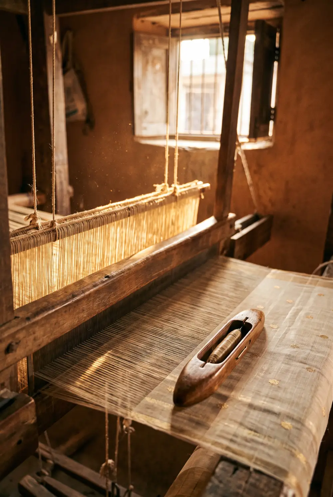
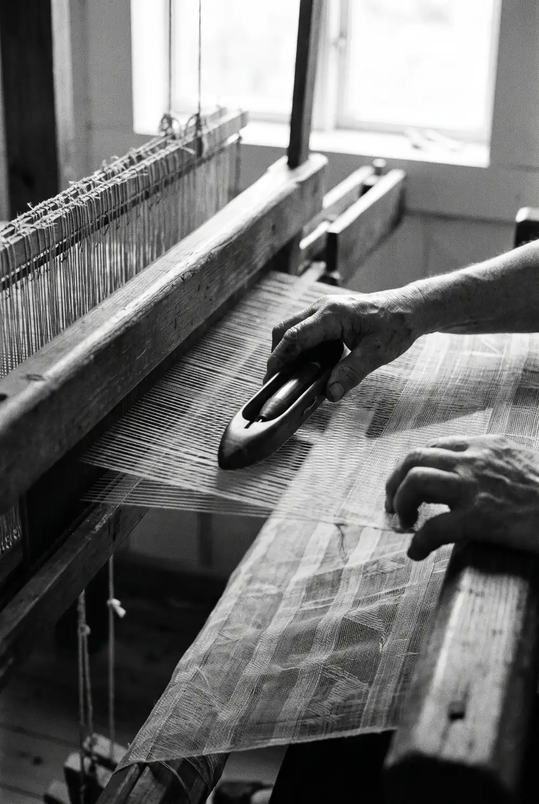
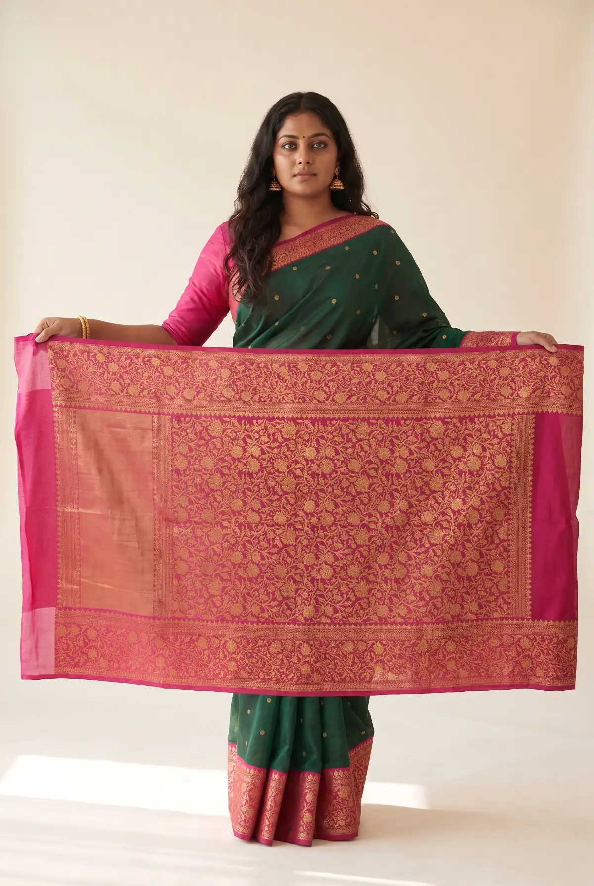
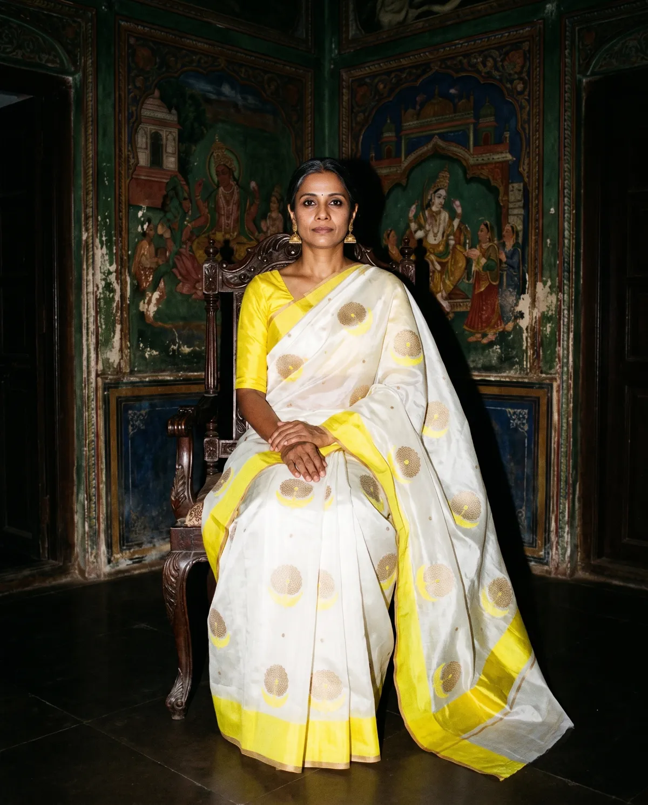
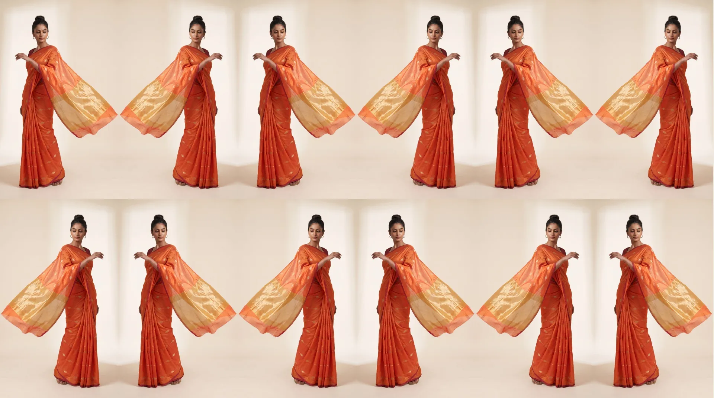
Fresh off the loomNew Season
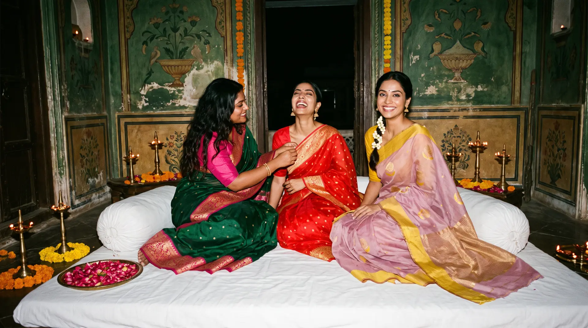
For lamps, gatherings and long eveningsFestive Edit
Dressed for the day itself
From the first haldi morning to the last reception toast, a drape for every ritual.
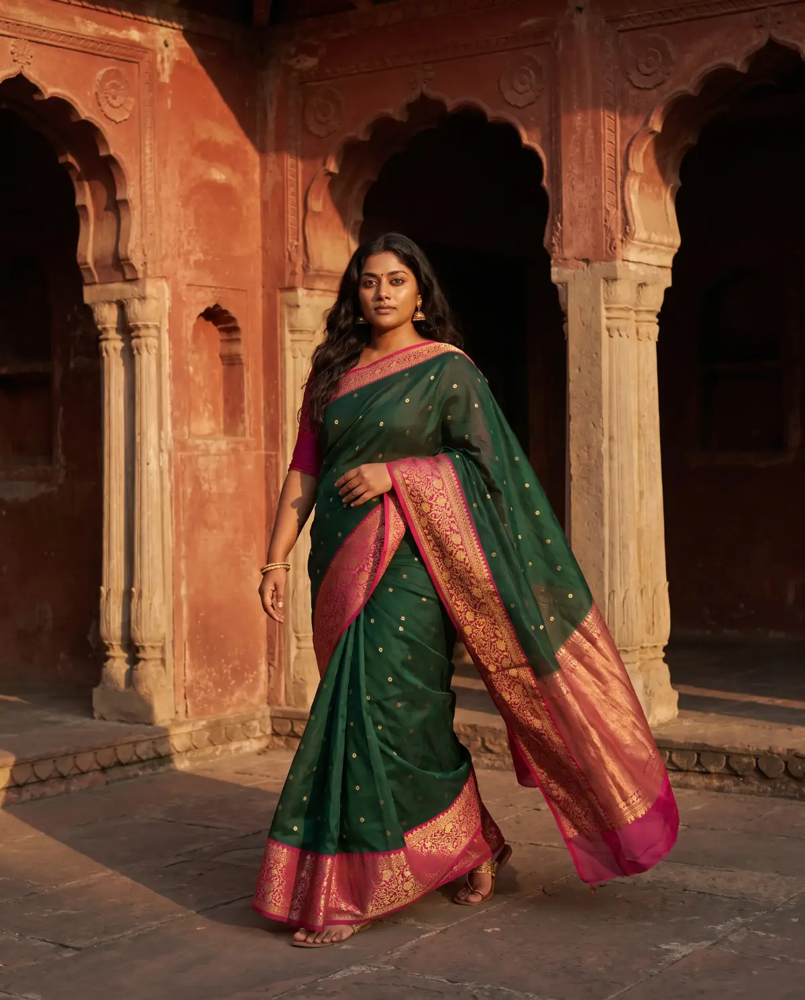
Bridal
Banarasi brocade in rani pink, temple red and old gold.
Shop bridal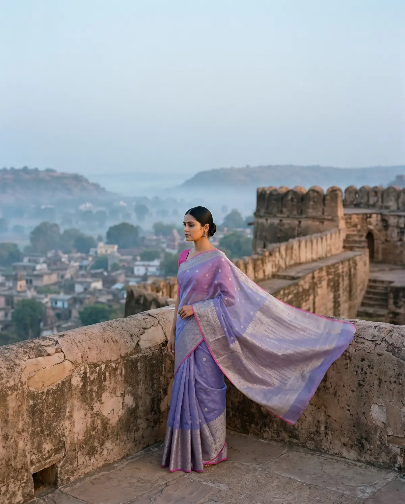
Reception
Evening silks with weight, sheen and quiet zari.
Shop reception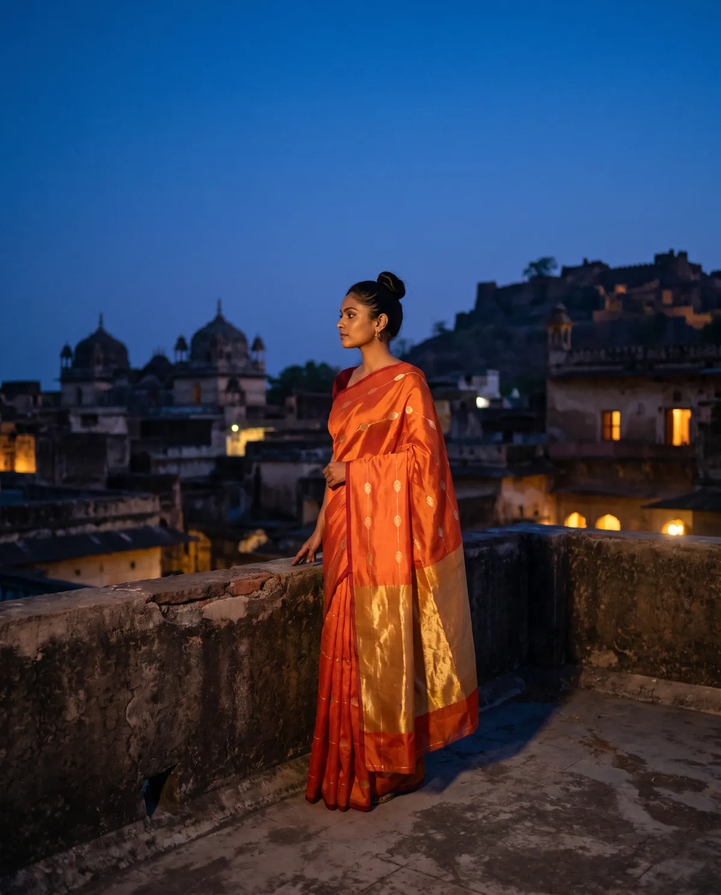
Mehendi and haldi
Saffron, marigold and light cottons for long sunny days.
Shop mehendi and haldi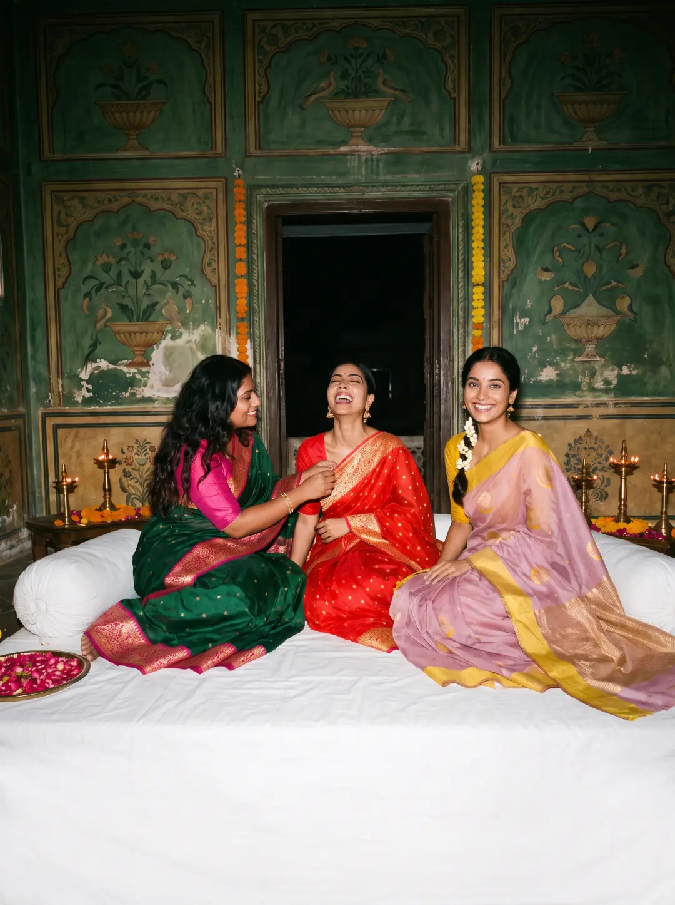
Festive
Diwali, Pongal, Durga Puja: colour for the lamps.
Shop festiveThe weaves we return to
Come and touch the cloth
Six stores across India, each one a slow room to sit, drape and decide.